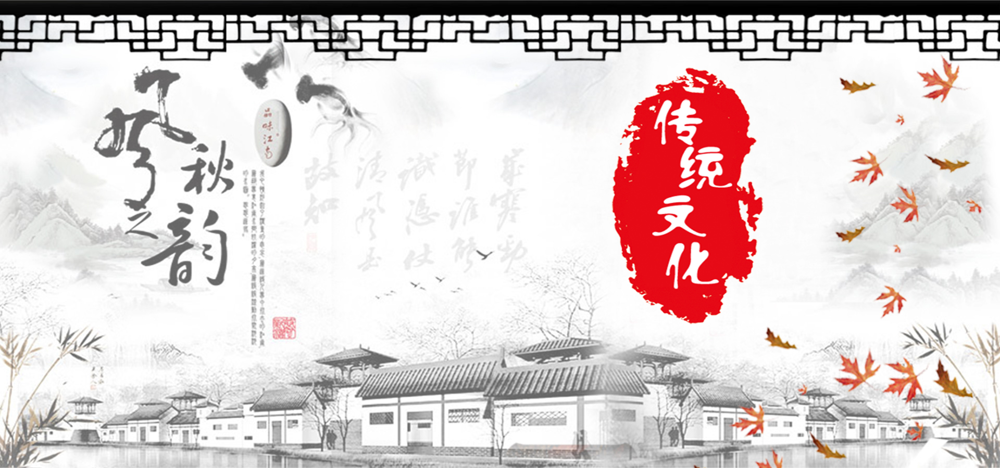
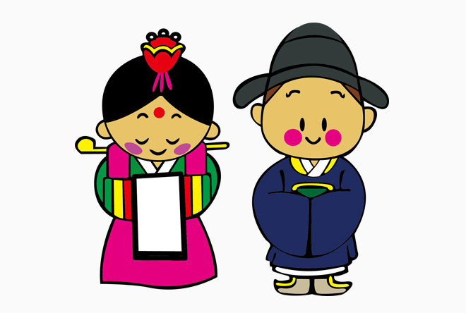
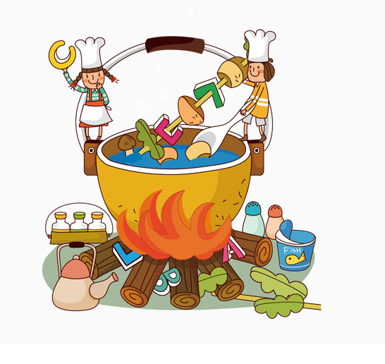

传统习俗,是指人们在社会生活中逐渐形成的，从历史沿袭而巩固下来的，具有稳定的社会风俗和行为习俗，并且已同民族情绪和社会心理密切结合， 成为人们自觉或不自觉的行为准则。传统习俗的内容是复杂的，存在于一个社会的传统习俗大体上分两部份: 一是历史遗留下来的，其源远流长，时代久远，具有社会性，集团性，民族性的特点.不同地区，不同集体， 不同民族都具有不同的传统习俗，如不同民族的民风习俗.二是适应现实社会历史条件而产生的，如新中国成立后所倡导的新的生活习俗。


传统文艺,我国的文艺遗产极其丰富并且辉煌，传统艺术绘画、书法、音乐、舞蹈、戏曲等等。 都有几千年的积累，都有伟大的创造，都透着五千年文明古国深厚的文化底蕴。 中国传统艺术以其浓郁的乡土气息、淳厚的艺术内涵和生动的历史痕迹， 越来越受到世界人民的喜爱和欣赏，成为人类共同的文化"大餐"。

诸子百家是对春秋、战国、秦汉时期各种学术派别的总称，据《汉书·艺文志》的记载，数得上名字的一共有189家， 4324篇著作。其后的《隋书·经籍志》《四库全书总目》等书则记载"诸子百家"实有上千家。 但流传较广、影响较大、最为著名的不过几十家而已。归纳而言只有12家被发展成学派。 诸子百家之流传中最为广泛的是法家、道家、墨家、儒家、阴阳家、名家、杂家、农家、小说家、纵横家、兵家、医家。 中国在古代创造了灿烂的文化艺术，具有鲜明的特色。中国有五千多年有文字可考的历史，文化典籍极其丰富。

中国饮食文化涉及到食源的开发与利用、食具的运用与创新、食品的生产与消费、餐饮的服务与接待、 餐饮业与食品业的经营与管理，以及饮食与国泰民安、饮食与文学艺术、饮食与人生境界的关系等，深厚广博。 从外延看，中国饮食文化可以从时代与技法、地域与经济、民族与宗教、食品与食具、消费与层次、 民俗与功能等多种角度进行分类，展示出不同的文化品味，体现出不同的使用价值，异彩纷呈。 中国饮食不但讲究"色、香、味"俱全，而且"滋、养、补"的特点。